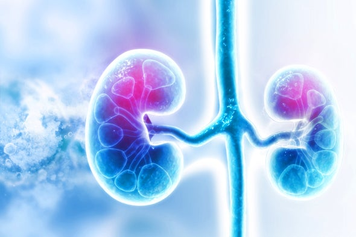

Offering international standards in healthcare, CW Central Hospital is the flagship entity of the CW Group of Hospitals. With its luxurious advanced medical facilities, this 14 storey multi-specialty general hospital is a one-stop medical centre that offers diagnostic, therapeutic and intensive care facilities.
CW Hospital is proud of its highly-qualified and experienced consultant specialists who are experts in a diverse range of medical to surgical divisions. They are supported by a team of highly-trained and experienced in-house medical officers and nursing staff.
CW Hospital prides itself in strictly adhering to international levels of patient care and safety. These high standards have resulted in CW Hospital receiving the Joint Commission International accreditation.
CW Hospital is accredited by the Joint Commission International (JCI), which is one of the world’s leading non-profit patient safety organizations. JCI seeks a world where every patient receives the highest quality of care possible
Heart Care
Brain and spine
Cosmetic and Plastic Surgery
Kidney Transplant
At CW Central, medical care is complimented with a personalised customer service.